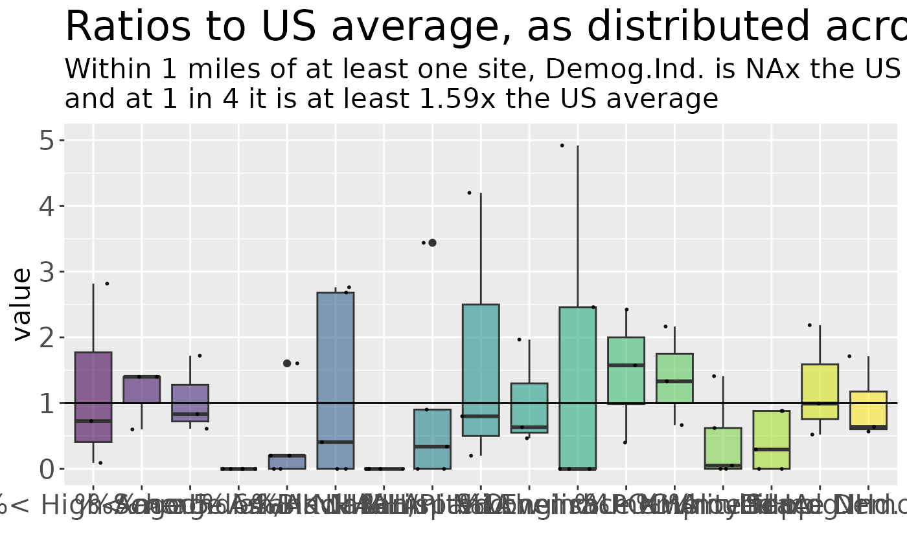

Given a set of points (lat lon), get table of EJScreen API results near each
Source:R/ejscreenapi_plus.R
ejscreenapi_plus.RdUsing EJScreen API without Shiny app interface
Usage
ejscreenapi_plus(
x,
y = NULL,
radius = 3,
unit = "miles",
wkid = 4326,
fips = NULL,
shapefile = NULL,
namestr = "",
report_every_n = 100,
save_when_report = FALSE,
format_report_or_json = "pjson",
on_server_so_dont_save_files = FALSE,
ipurl = "ejscreen.epa.gov",
mapping_for_names = NULL,
usewhichnames = "r",
calculate_ratios = TRUE,
verbose = FALSE,
getstatefromplacename = TRUE
)Arguments
- x
longitudes; or path/filename to xlsx or csv with lat, lon; or data.frame or data.table with lat,lon
- y
latitudes, or ignored if x was a file or table with lat,lon info.
- radius
circular buffer radius (in miles by default, unless unit changed)
- unit
default is miles
- wkid
do not use. https://epsg.io/4326
- fips
if used instead of lon,lat it should be a character FIPS code vector (counties, tracts, or blockgroups)
- shapefile
not implemented
- namestr
optional text
- report_every_n
default is to provide an update every so often
- save_when_report
default is FALSE but if TRUE it saves work in progress every so often
- format_report_or_json
do not use
- on_server_so_dont_save_files
default is FALSE, but set to TRUE if this is run on a server
- ipurl
change only if different URL has to be used for the EJScreen API
- mapping_for_names
a table that translates between original (as on FTP site), short friendly (useful in coding or analysis), and long complete variable names (for clearer Excel headers). This can be read from a csv file or from data in a package. Not documented here, as format may change.
- usewhichnames
default is to use the short friendly ones?
- calculate_ratios
whether to add columns with ratio of raw score to the US or State average
- verbose
whether to print to console / viewer / plot
- getstatefromplacename
set to FALSE if you need the exact output of API and TRUE if you want to try to extract ST abbrev and statename from the placename field, which is more likely to be correct than the stateAbbr and stateName fields in the API output.
Value
Returns a data.frame of results, one row per buffer (site), one column per indicator,
with over 300 columns.
ejscreenit() returns that as one element of a list that also has a map and plot.
Details
See ejscreenit() for more details on this.
ejscreenit() uses functions below, but returns a list with table, map, plot, etc.
ejscreenapi_plus() accepts file or table or vectors of point data,
uses ejscreenapi() to get EJScreen stats,
and then prepends input table and renames columns, to return a table.
ejscreenapi() gets EJ stats for many points as a data.table of many rows.
ejscreenapi1() gets EJ stats for 1 point via API, as data.frame of 1 row.
ejscreenRESTbroker() gets EJ stats for one point as JSON.
It also now drops redundant columns where the same numbers had been returned from API using the normal name and a synonym name, as with TOTALPOP and "totalPop"
See also
ejscreenit() which also demonstrates a map and a plot,
and accepts filename as input pts. see ejscreenapi() that
uses ejscreenapi1() and ejscreenRESTbroker()
Examples
if (FALSE) # see [ejscreenit()] for examples
pts <- data.frame(
siteid = 1:2,
sitename = c("site A", "site B"),
lon = c(-91.132107, -91.09),
lat = c(30.494982, 30.45)
)
# pts <- testpoints_5
myradius <- 1
x <- testoutput_ejscreenapi_plus_5; names(x) <- fixcolnames(names(x), "r", "long")
# x <- ejscreenapi_plus(pts, radius = myradius, usewhichnames = "long")
# x <- ejscreenapi_plus(x = pts$lon, y = pts$lat, radius = myradius, usewhichnames = "long")
# x <- ejscreenapi_plus(pts, radius = myradius, usewhichnames = "long")
## view results
t(x[1, 3:ncol(x)])
#> 1
#> Point ID "1"
#> Buffer distance (miles) "1"
#> overlaps_another "FALSE"
#> Total Population "10157"
#> sitenumber "1"
#> sitename "site 1"
#> Longitude "-111.904"
#> Latitude "33.56042"
#> valid "TRUE"
#> invalid_msg ""
#> % People of Color "16"
#> % Low Income "19"
#> % with Less Than High School Education "1"
#> % in limited English-speaking Households "1"
#> % under Age 5 "3"
#> % over Age 64 "31"
#> %Low life expectancy "8"
#> Demographic Index USA "0.7"
#> Supplemental Demographic Index USA "0.93"
#> Lead Paint Indicator (% pre-1960s housing) "0.011"
#> Diesel Particulate Matter (ug/m3) "0.23"
#> Nitrogen Dioxide (NO2) "9.9"
#> Drinking Water Non-Compliance "1"
#> Traffic Proximity and Volume (daily traffic count/distance to road) "2e+06"
#> Wastewater Discharge Indicator (toxicity-weighted concentration/distance) "60000"
#> Superfund Proximity (site count/km distance) "0.25"
#> RMP Proximity (facility count/km distance) "0"
#> Hazardous Waste Proximity (facility count/km distance) "0.72"
#> Ozone (ppb) "80.9"
#> Particulate Matter (PM 2.5 in ug/m3) "7.72"
#> Underground Storage Tanks (UST) indicator "1.1"
#> Toxic Releases to Air "550"
#> Demographic Index State "0.73"
#> Supplemental Demographic Index State "0.7"
#> % Unemployed "4"
#> State Average for % People of Color "44"
#> State Average for % Low Income "31"
#> State Average for % with Less Than High School Education "12"
#> State Average for % in limited English-speaking Households "4"
#> State Average for % under Age 5 "5"
#> State Average for % over Age 64 "21"
#> State Average for %Low life expectancy "19"
#> State Average for Supplemental Summary Index for Supplemental Demographic Index "1.43"
#> State Average for Demographic Index "1.53"
#> State Average for Lead Paint Indicator (% pre-1960s housing) "0.088"
#> State Average for Diesel Particulate Matter (ug/m3) "0.209"
#> State Average for Nitrogen Dioxide (NO2) "9.3"
#> State Average for Drinking Water Non-Compliance "1.8"
#> State Average for Traffic Proximity and Volume (daily traffic count/distance to road) "1900000"
#> State Average for Wastewater Discharge Indicator (toxicity-weighted concentration/distance) "32000"
#> State Average for Superfund Proximity (site count/km distance) "0.41"
#> State Average for RMP Proximity (facility count/km distance) "0.54"
#> State Average for Hazardous Waste Proximity (facility count/km distance) "1.5"
#> State Average for Ozone (ppb) "71.9"
#> State Average for Particulate Matter (PM 2.5 in ug/m3) "7.4"
#> State Average for Underground Storage Tanks (UST) indicator "1.6"
#> State Average for Toxic Releases to Air "2800"
#> State Average for % Unemployed "6"
#> State percentile for % People of Color "17"
#> State percentile for % Low Income "34"
#> State percentile for % with Less Than High School Education "15"
#> State percentile for % in limited English-speaking Households "53"
#> State percentile for % under Age 5 "38"
#> State percentile for % over Age 64 "81"
#> State percentile for %Low life expectancy "0"
#> State percentile for Demographic Index "20"
#> State percentile for Supplemental Summary Index for Supplemental Demographic Index "11"
#> State percentile for Lead Paint Indicator (% pre-1960s housing) "51"
#> State percentile for Diesel Particulate Matter (ug/m3) "50"
#> State percentile for Nitrogen Dioxide (NO2) "44"
#> State percentile for Drinking Water Non-Compliance "65"
#> State percentile for Traffic Proximity and Volume (daily traffic count/distance to road) "56"
#> State percentile for Wastewater Discharge Indicator (toxicity-weighted concentration/distance) "86"
#> State percentile for Superfund Proximity (site count/km distance) "85"
#> State percentile for RMP Proximity (facility count/km distance) "0"
#> State percentile for Hazardous Waste Proximity (facility count/km distance) "51"
#> State percentile for Ozone (ppb) "96"
#> State percentile for Particulate Matter (PM 2.5 in ug/m3) "49"
#> State percentile for Underground Storage Tanks (UST) indicator "57"
#> State percentile for Toxic Releases to Air "49"
#> State percentile for Summary Index for Lead Paint Indicator "49"
#> State percentile for Summary Index for Diesel Particulate Matter "39"
#> State percentile for Summary Index for Nitrogen Dioxide (NO2) "32"
#> State percentile for Summary Index for Drinking Water Non-Compliance "67"
#> State percentile for Summary Index for Traffic Proximity and Volume "40"
#> State percentile for Summary Index for Wastewater Discharge Indicator "53"
#> State percentile for Summary Index for Superfund Proximity "68"
#> State percentile for Summary Index for RMP Proximity "0"
#> State percentile for Summary Index for Hazardous Waste Proximity "39"
#> State percentile for Summary Index for Ozone "61"
#> State percentile for Summary Index for Particulate Matter "38"
#> State percentile for Summary Index for Underground Storage Tanks (UST) indicator "33"
#> State percentile for Summary Index for Toxic Releases to Air "38"
#> State percentile for Supplemental Summary Index for Lead Paint Indicator "48"
#> State percentile for Supplemental Summary Index for Diesel Particulate Matter "34"
#> State percentile for Supplemental Summary Index for Nitrogen Dioxide (NO2) "30"
#> State percentile for Supplemental Summary Index for Drinking Water Non-Compliance "63"
#> State percentile for Supplemental Summary Index for Traffic Proximity and Volume "38"
#> State percentile for Supplemental Summary Index for Wastewater Discharge Indicator "50"
#> State percentile for Supplemental Summary Index for Superfund Proximity "67"
#> State percentile for Supplemental Summary Index for RMP Proximity "0"
#> State percentile for Supplemental Summary Index for Hazardous Waste Proximity "36"
#> State percentile for Supplemental Summary Index for Ozone "60"
#> State percentile for Supplemental Summary Index for Particulate Matter "32"
#> State percentile for Supplemental Summary Index for Underground Storage Tanks (UST) indicator "32"
#> State percentile for Supplemental Summary Index for Toxic Releases to Air "35"
#> State percentile for % Unemployed "53"
#> US Average for % People of Color "40"
#> US Average for % Low Income "30"
#> US Average for % with Less Than High School Education "11"
#> US Average for % in limited English-speaking Households "5"
#> US Average for % under Age 5 "5"
#> US Average for % over Age 64 "18"
#> US Average for %Low life expectancy "20"
#> US Average for Demographic Index "1.34"
#> US Average for Supplemental Summary Index for Supplemental Demographic Index "1.64"
#> US Average for Lead Paint Indicator (% pre-1960s housing) "0.3"
#> US Average for Diesel Particulate Matter (ug/m3) "0.191"
#> US Average for Nitrogen Dioxide (NO2) "7.8"
#> US Average for Drinking Water Non-Compliance "2.2"
#> US Average for Traffic Proximity and Volume (daily traffic count/distance to road) "1700000"
#> US Average for Wastewater Discharge Indicator (toxicity-weighted concentration/distance) "7e+05"
#> US Average for Superfund Proximity (site count/km distance) "0.39"
#> US Average for RMP Proximity (facility count/km distance) "0.57"
#> US Average for Hazardous Waste Proximity (facility count/km distance) "3.5"
#> US Average for Ozone (ppb) "61.8"
#> US Average for Particulate Matter (PM 2.5 in ug/m3) "8.45"
#> US Average for Underground Storage Tanks (UST) indicator "3.6"
#> US Average for Toxic Releases to Air "4600"
#> US Average for % Unemployed "6"
#> US percentile for % People of Color "31"
#> US percentile for % Low Income "36"
#> US percentile for % with Less Than High School Education "13"
#> US percentile for % in limited English-speaking Households "58"
#> US percentile for % under Age 5 "35"
#> US percentile for % over Age 64 "89"
#> US percentile for %Low life expectancy "0"
#> US percentile for Demographic Index "25"
#> US percentile for Supplemental Summary Index for Supplemental Demographic Index "12"
#> US percentile for Lead Paint Indicator (% pre-1960s housing) "16"
#> US percentile for Diesel Particulate Matter (ug/m3) "72"
#> US percentile for Nitrogen Dioxide (NO2) "73"
#> US percentile for Drinking Water Non-Compliance "78"
#> US percentile for Traffic Proximity and Volume (daily traffic count/distance to road) "72"
#> US percentile for Wastewater Discharge Indicator (toxicity-weighted concentration/distance) "96"
#> US percentile for Superfund Proximity (site count/km distance) "74"
#> US percentile for RMP Proximity (facility count/km distance) "0"
#> US percentile for Hazardous Waste Proximity (facility count/km distance) "39"
#> US percentile for Ozone (ppb) "96"
#> US percentile for Particulate Matter (PM 2.5 in ug/m3) "35"
#> US percentile for Underground Storage Tanks (UST) indicator "53"
#> US percentile for Toxic Releases to Air "48"
#> US percentile for Summary Index for Lead Paint Indicator "16"
#> US percentile for Summary Index for Diesel Particulate Matter "52"
#> US percentile for Summary Index for Nitrogen Dioxide (NO2) "50"
#> US percentile for Summary Index for Drinking Water Non-Compliance "79"
#> US percentile for Summary Index for Traffic Proximity and Volume "50"
#> US percentile for Summary Index for Wastewater Discharge Indicator "61"
#> US percentile for Summary Index for Superfund Proximity "66"
#> US percentile for Summary Index for RMP Proximity "0"
#> US percentile for Summary Index for Hazardous Waste Proximity "34"
#> US percentile for Summary Index for Ozone "63"
#> US percentile for Summary Index for Particulate Matter "32"
#> US percentile for Summary Index for Underground Storage Tanks (UST) indicator "33"
#> US percentile for Summary Index for Toxic Releases to Air "39"
#> US percentile for Supplemental Summary Index for Lead Paint Indicator "15"
#> US percentile for Supplemental Summary Index for Diesel Particulate Matter "51"
#> US percentile for Supplemental Summary Index for Nitrogen Dioxide (NO2) "50"
#> US percentile for Supplemental Summary Index for Drinking Water Non-Compliance "75"
#> US percentile for Supplemental Summary Index for Traffic Proximity and Volume "50"
#> US percentile for Supplemental Summary Index for Wastewater Discharge Indicator "61"
#> US percentile for Supplemental Summary Index for Superfund Proximity "62"
#> US percentile for Supplemental Summary Index for RMP Proximity "0"
#> US percentile for Supplemental Summary Index for Hazardous Waste Proximity "27"
#> US percentile for Supplemental Summary Index for Ozone "64"
#> US percentile for Supplemental Summary Index for Particulate Matter "25"
#> US percentile for Supplemental Summary Index for Underground Storage Tanks (UST) indicator "28"
#> US percentile for Supplemental Summary Index for Toxic Releases to Air "33"
#> US percentile for % Unemployed "54"
#> EPA Region "9"
#> Count of National Priority List Superfund sites "0"
#> Count of Treatment Storage Disposal Facilities (TSDF) "0"
#> Number of Water Discharge Facilities "5"
#> Number of Air Pollution Facilities "2"
#> Number of Brownfields "0"
#> Number of Toxic Release Facilities "0"
#> Number of Schools "1"
#> Number of Hospitals "0"
#> Number of Worship Places "0"
#> Flag for Overlapping with Tribes "Yes"
#> Flag for Overlapping with CJEST Disadvantaged Communities "Yes"
#> Flag for Overlapping with EPA IRA Disadvantaged Communities "Yes"
#> Flag for Overlapping with Non-Attainment Areas "Yes"
#> Flag for Overlapping with Impaired Waters "No"
#> Flag for Overlapping with Housing Burden Communities "No"
#> Flag for Overlapping with Transportation Disadvantaged Communities "Yes"
#> Flag for Overlapping with Food Desert Areas "No"
#> WKID (for internal use) "4326"
#> Census blockgroups (count) "12"
#> Count of Census Block Groups with zero population "0"
#> Census blocks (count) "132"
#> Seconds elapsed obtaining data "1.068248"
#> Units on radius (Miles, etc) "9035"
#> Resolution of Census Units for Indicators "blockgroup"
#> Area of Circular Buffer in Square Miles "3.14"
#> City or County Plus State for the Area of Interest "Scottsdale, AZ"
#> Percent of population speaking English at home "91"
#> Percent of population speaking Spanish at home "5"
#> Percent of population speaking French at home "0"
#> Percent of population speaking Russian, Polish or Other Slavic at home "1"
#> Percent of population speaking Indo-European at home "2"
#> Percent of population speaking Vietnamese at home "0"
#> Percent of population speaking Other Asian and Pacific Island languages at home "0"
#> Percent of population speaking Arabic at home "0"
#> Percent of population speaking Other and Unspecified languages at home "0"
#> pctlan_non_english "9"
#> % White (non-Hispanic, single race) "84"
#> % Black or African American (non-Hispanic, single race) "5"
#> % Asian (non-Hispanic, single race) "1"
#> % Hispanic or Latino "6"
#> % American Indian and Alaska Native (non-Hispanic, single race) "0"
#> % Native Hawaiian and Other Pacific Islander (non-Hispanic, single race) "0"
#> % Other race (non-Hispanic, single race) "0"
#> % Two or more races (non-Hispanic) "3"
#> Percent under age 18 "17"
#> Percent above age 17 "83"
#> Percent Speaking Spanish (as % of limited English households) "24"
#> Percent Speaking Other Indo-European languages (as % of limited English households) "76"
#> Percent Speaking Asian-Pacific Island languages (as % of limited English households) "0"
#> Percent Speaking Other languages (as % of limited English households) "0"
#> P_DISABILITY "8"
#> Percent Males "51"
#> Percent Females "49"
#> Life Expectancy in Years "80"
#> Per Capita Income "71569"
#> Count of Households "4785"
#> Percent Owner Occupied households "70"
#> % with Heart Diseases "6.5"
#> % of Adults with Asthma "9"
#> % of Adults with Cancer (excluding skin cancer) "10.5"
#> % with Disabilities "8.1"
#> Households without Broadband Internet "5"
#> Households without Health Insurance "3"
#> Estimated Current Flood Risk "1"
#> Estimated Flood Risk in 30 Years "2"
#> Estimated Current Fire Risk "27"
#> Estimated Fire Risk in 30 Years "47"
#> state.avg.pctlowlifex "78.5"
#> State Average for % with Heart Diseases "5.9"
#> State Average for % of Adults with Asthma "10.5"
#> State Average for % of Adults with Cancer (excluding skin cancer) "6.7"
#> State Average for % with Disabilities "14.2"
#> State Average for Households without Broadband Internet "12"
#> State Average for Households without Health Insurance "11"
#> State Average for Estimated Current Flood Risk "6"
#> State Average for Estimated Flood Risk in 30 Years "7"
#> State Average for Estimated Current Fire Risk "48"
#> State Average for Estimated Fire Risk in 30 Years "53"
#> state.pctile.pctlowlifex "0"
#> State percentile for %Low life expectancy.1 "0"
#> State percentile for % with Heart Diseases "68"
#> State percentile for % of Adults with Asthma "4"
#> State percentile for % of Adults with Cancer (excluding skin cancer) "90"
#> State percentile for % with Disabilities "15"
#> State percentile for Households without Broadband Internet "40"
#> State percentile for Households without Health Insurance "15"
#> State percentile for Estimated Current Flood Risk "46"
#> State percentile for Estimated Flood Risk in 30 Years "44"
#> State percentile for Estimated Current Fire Risk "47"
#> State percentile for Estimated Fire Risk in 30 Years "44"
#> US Average for % with Heart Diseases "5.8"
#> US Average for % of Adults with Asthma "10.3"
#> US Average for % of Adults with Cancer (excluding skin cancer) "6.4"
#> US Average for % with Disabilities "13.7"
#> US Average for Households without Broadband Internet "13"
#> US Average for Households without Health Insurance "9"
#> US Average for Estimated Current Flood Risk "12"
#> US Average for Estimated Flood Risk in 30 Years "13"
#> US Average for Estimated Current Fire Risk "14"
#> US Average for Estimated Fire Risk in 30 Years "19"
#> US percentile for % with Heart Diseases "68"
#> US percentile for % of Adults with Asthma "15"
#> US percentile for % of Adults with Cancer (excluding skin cancer) "98"
#> US percentile for % with Disabilities "17"
#> US percentile for Households without Broadband Internet "32"
#> US percentile for Households without Health Insurance "22"
#> US percentile for Estimated Current Flood Risk "19"
#> US percentile for Estimated Flood Risk in 30 Years "18"
#> US percentile for Estimated Current Fire Risk "83"
#> US percentile for Estimated Fire Risk in 30 Years "80"
#> stateAbbr_from_api NA
#> stateName_from_api NA
#> State Abbreviation "AZ"
#> State Name "Arizona"
#> Ratio to US avg Demographic Index "0.5224"
#> Ratio to US avg Supplemental Summary Index for Supplemental Demographic Index "0.5671"
#> Ratio to US avg % Low Income "0.6333"
#> Ratio to US avg % in limited English-speaking Households "0.2"
#> Ratio to US avg % Unemployed "0.6667"
#> Ratio to US avg % with Less Than High School Education "0.0909"
#> Ratio to US avg % under Age 5 "0.6"
#> Ratio to US avg % over Age 64 "1.7222"
#> Ratio to US avg % People of Color "0.4"
#> Ratio to US avg % Hispanic or Latino "0.3383"
#> Ratio to US avg % Black or African American (non-Hispanic, single race) "0.4062"
#> Ratio to US avg % Asian (non-Hispanic, single race) "0.2006"
#> Ratio to US avg % American Indian and Alaska Native (non-Hispanic, single race) "0"
#> Ratio to US avg % Native Hawaiian and Other Pacific Islander (non-Hispanic, single race) "0"
#> Ratio to US avg % Other race (non-Hispanic, single race) "0"
#> Ratio to US avg % Two or more races (non-Hispanic) "0.8813"
#> Ratio to US avg % White (non-Hispanic, single race) "1.4112"
#> Ratio to US avg Particulate Matter "0.9136"
#> Ratio to US avg Ozone "1.3091"
#> Ratio to US avg Nitrogen Dioxide (NO2) "1.2692"
#> Ratio to US avg Diesel Particulate Matter "1.2042"
#> Ratio to US avg Toxic Releases to Air "0.1196"
#> Ratio to US avg Traffic Proximity and Volume "1.1765"
#> Ratio to US avg Lead Paint Indicator "0.0367"
#> Ratio to US avg Superfund Proximity "0.641"
#> Ratio to US avg RMP Proximity "0"
#> Ratio to US avg Hazardous Waste Proximity "0.2057"
#> Ratio to US avg Underground Storage Tanks indicator "0.3056"
#> Ratio to US avg Wastewater Discharge Indicator "0.0857"
#> Ratio to US avg Drinking Water Non-Compliance "0.4545"
#> Ratio to State avg Demographic Index "0.4575"
#> Ratio to State avg Supplemental Summary Index for Supplemental Demographic Index "0.6503"
#> Ratio to State avg % Low Income "0.6129"
#> Ratio to State avg % in limited English-speaking Households "0.25"
#> Ratio to State avg % Unemployed "0.6667"
#> Ratio to State avg % with Less Than High School Education "0.0833"
#> Ratio to State avg % under Age 5 "0.6"
#> Ratio to State avg % over Age 64 "1.4762"
#> Ratio to State avg % People of Color "0.3636"
#> Ratio to State avg % Hispanic or Latino "0.2016"
#> Ratio to State avg % Black or African American (non-Hispanic, single race) "1.3126"
#> Ratio to State avg % Asian (non-Hispanic, single race) "0.3283"
#> Ratio to State avg % American Indian and Alaska Native (non-Hispanic, single race) "0"
#> Ratio to State avg % Native Hawaiian and Other Pacific Islander (non-Hispanic, single race) "0"
#> Ratio to State avg % Other race (non-Hispanic, single race) "0"
#> Ratio to State avg % Two or more races (non-Hispanic) "0.9055"
#> Ratio to State avg % White (non-Hispanic, single race) "1.5295"
#> Ratio to State avg Particulate Matter "1.0432"
#> Ratio to State avg Ozone "1.1252"
#> Ratio to State avg Nitrogen Dioxide (NO2) "1.0645"
#> Ratio to State avg Diesel Particulate Matter "1.1005"
#> Ratio to State avg Toxic Releases to Air "0.1964"
#> Ratio to State avg Traffic Proximity and Volume "1.0526"
#> Ratio to State avg Lead Paint Indicator "0.125"
#> Ratio to State avg Superfund Proximity "0.6098"
#> Ratio to State avg RMP Proximity "0"
#> Ratio to State avg Hazardous Waste Proximity "0.48"
#> Ratio to State avg Underground Storage Tanks indicator "0.6875"
#> Ratio to State avg Wastewater Discharge Indicator "1.875"
#> Ratio to State avg Drinking Water Non-Compliance "0.5556"
DT::datatable(x , escape = FALSE)
names(x) <- fixcolnames(names(x), "long", "r")
boxplots_ratios((calc_ratios_to_avg(x))$ratios_d, wheretext = myradius)
#> US averages for demog subgroups like pcthisp not found (note they are not provided by the EJScreen API)
#> so looking up and adding those, and rescaling as 0-100, which is how ejscreen tables store percentages though not how ejamit() does
#> Warning: Removed 18 rows containing non-finite outside the scale range
#> (`stat_boxplot()`).
#> Warning: Removed 18 rows containing missing values or values outside the scale range
#> (`geom_point()`).

# \dontrun{}